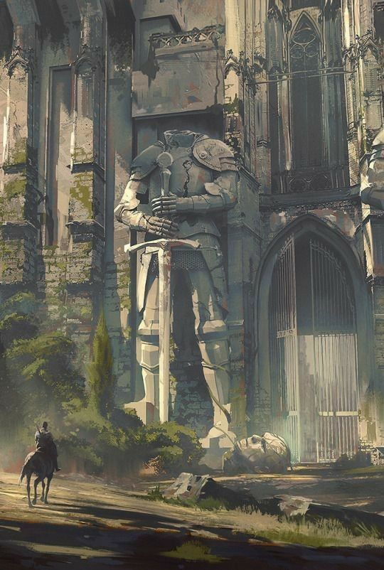
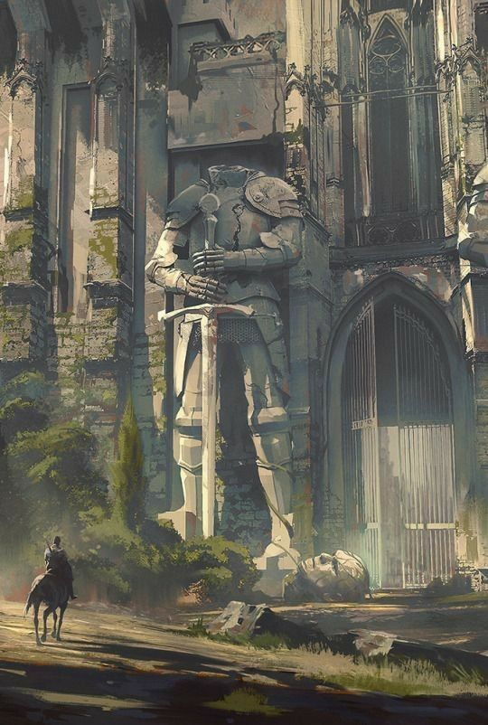

Tips for Creating Your Own RPG System
╬╬═════════❮◆❯═════════╬╬
Have you ever thought about creating your own RPG system? The world of RPGs is full of systems
diverse, each focused on a theme or style that directly reflects on its
mechanics and proposals. It is these elements that differentiate the systems from each other, a game
of Vampire: The Masquerade, for example, will be completely different from a Dungeons and
Dragons.
Generally, these systems are limited only by imagination. That is, if you think about
a theme, there will probably be an equivalent system for it. But an alternative, if
If you don't find one that suits your taste or has the exact theme, create your own RPG system,
with rules and themes of your own design!
Follow the 5 tips for you to create your own RPG system!
You are going to create your own RPG system: what are the rules?
╬╬═════════❮◆❯═════════╬╬
If you are interested in creating something more personal about yourself, it is important to start define some things. In every system, the rules are the soul and spine of an RPG, being what sustains it. Defining the rules is vital to start architecting your system, an example is defining how a player succeeds in that activity he is carrying out.
 



What and how many attributes?
╬╬═════════❮◆❯═════════╬╬
Generally, as basic character information, attributes are the general aspects that
define their common capabilities. Define as physical, intellectual, social or
supernatural characters translate into the character sheet.
What types and how many skills?
╬╬═════════❮◆❯═════════╬╬
Skills are nothing more than different specific tasks that can be performed within the game and account for more general or specific actions. For example, climbing skill allows you to climb mountains, but can also be used to overcome obstacles smaller than require climbing some structure.
Advantages, disadvantages, gifts, talents, skills: what and how to use them?
╬╬═════════❮◆❯═════════╬╬
In addition to actions, an RPG system must also include elements that can play with
the very mechanics of a character. For this, there are these characteristics or skills
extraordinary features that not only serve mechanically, but also help their players when
define the particularities of the characters.
For example, a character with a vision disadvantage, such as being one-eyed or having cataracts,
suffers different penalties than others who have full vision.
Magic, psionics, supernatural: what are the possible powers of the characters?
╬╬═════════❮◆❯═════════╬╬
Based on your choice of theme, adopting elements that stray from realism is a possibility. Determine what other elements these are, whether they are supernatural powers, magic, powers, among others.